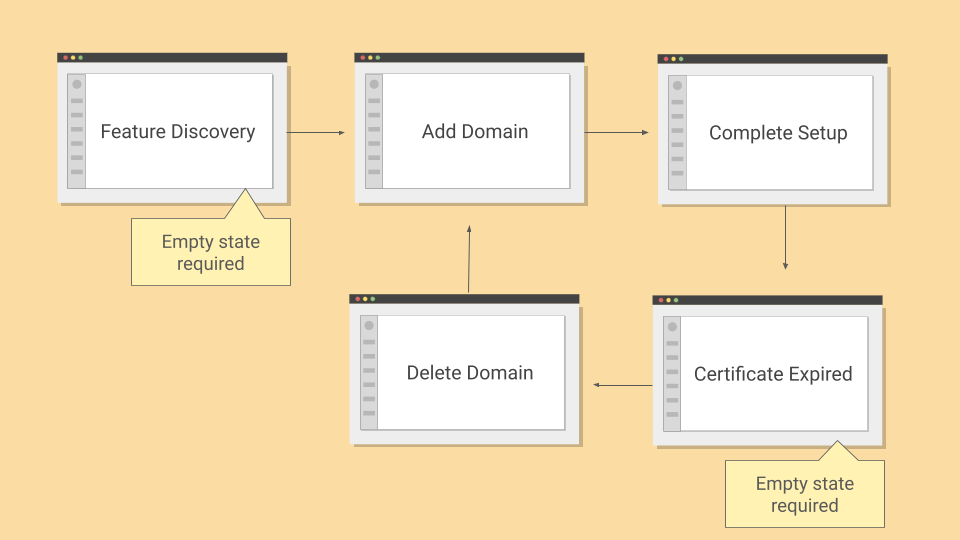

Simplifying Domain Configuration

Sometimes UX writing has to bridge the gap between deeply technical processes and the people asked to use them. Domain configuration was one of those cases.
Context
As one of the UX writers at a fast-moving low-code software company, I was asked to design the experience for customers setting up custom domains. On the surface, this sounded straightforward. It seemed like a simple process of walking users through adding and verifying a domain. In practice, it turned out to be far more complex.
The Product Designer assigned to the feature was unavailable, as was the case with the Product Manager. I was left with vague directions and no clear blueprint for how the flow should work.
From Uncertainty to Clarity
Without a plan to fall back on, I took the lead. I had no background in DNS records, CNAMEs, or SSL validation, so I started with research. I read up on the basics, then sat down with a Cloud Architect stakeholder and a few backend developers to understand the technical requirements. Their explanations gave me the grounding I needed to write with confidence.
With that foundation in place, I partnered with another Designer who happened to be available. Together we began shaping the experience into a step-by-step flow that would feel effortless for users, even if the underlying process was highly technical.
The Technical Process
For customers to connect a custom domain, they needed to add their domain to the platform, verify ownership by adding a CNAME record, point the domain to their application with a second CNAME, and then ensure SSL validation completed within 72 hours to avoid expiration.
The trouble was that only more advanced users were familiar with DNS or SSL concepts.
On top of that, the 72-hour window for SSL validation was critical. If users missed it, they had to start the process over.
Instead of piling more jargon into the UI, we set out to design a flow that guided users through these constraints without overwhelming them.
The Approach
The key was to reduce cognitive load. We divided the flow into three distinct steps—add a domain, validate ownership, and point the domain.
This ensured that users only had to focus on one action at a time. Each step was framed in plain language and anchored by a clear goal.
Usability testing on low-fidelity mockups revealed that some users were unfamiliar with SSL certificates but reacted well to the word security. That insight informed a critical shift. Instead of "SSL certificate," we told users: "A security certificate was issued for this domain. This certificate will expire in 72 hours. Follow the next steps to complete the setup before expiration."
This wording simplified the concept, highlighted the time constraint, and focused attention on the next action.

Guiding Users Through Uncertainty
The same principle applied to expired states. Originally, users who missed the 72-hour window were left staring at a system message that offered no path forward. We replaced it with: "The security certificate for this domain has expired. To reuse this domain, delete it and add it again."
This avoided blame, stated the issue in clear terms, and gave users a direct recovery path. We also added helpful empty states at key points.
When no domain had been added yet, the interface clearly explained why the section was blank and how to get started. When a certificate expired, the message no longer left users guessing, but guided them to resolution.
We also added confirmation modals for users attempting to leave the configuration before completion. This prevented certificate expiration and gave users a chance to reconsider.

Outcome
The new copy and structure made the domain configuration process less intimidating and far easier to complete.
Customers no longer felt blocked by technical jargon or hidden deadlines. The product gained a consistent voice in error states and flows, aligning with our conversational tone.
Results
In usability tests, participants reported that the flow felt more approachable and easier to follow. Users were now able to complete the configuration with minimal guidance.
Support data backed this up. Tickets related to SSL and DNS setup dropped by about 31% in the weeks following the rollout, giving the support team space to focus on more complex technical issues.
By restructuring the flow into simple steps we turned a fragile, failure-prone process into a guided experience. It was a reminder that even in highly technical features, words carry the weight of the experience.